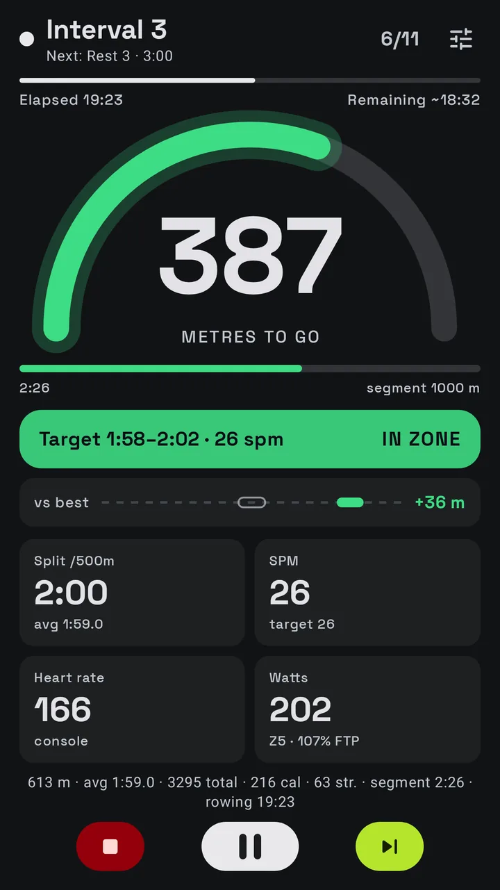
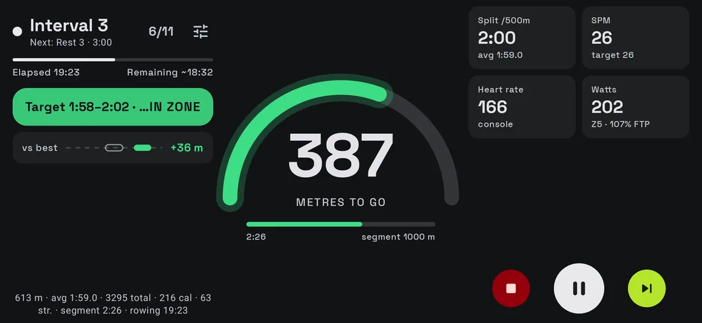
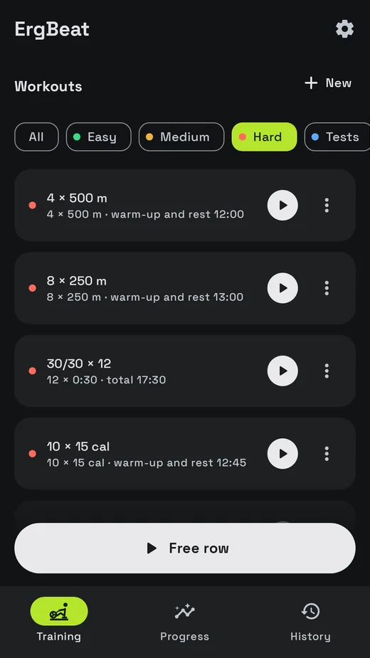
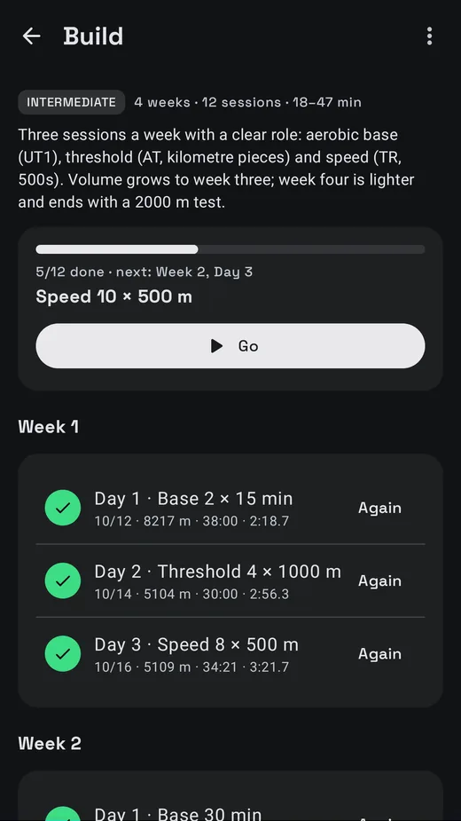
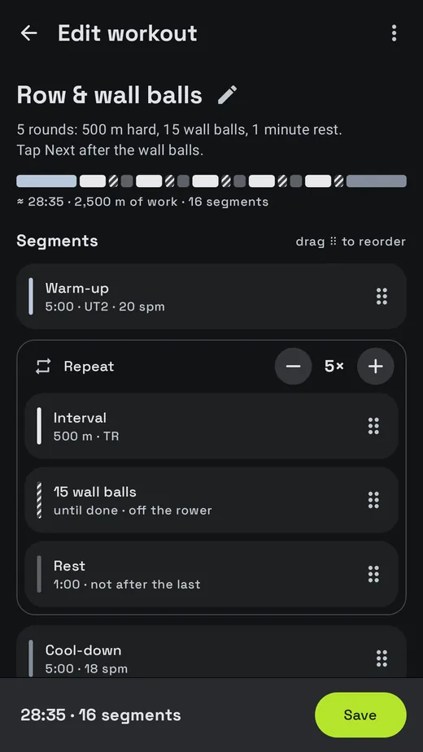
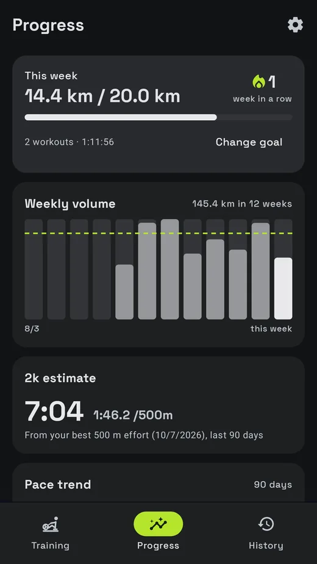
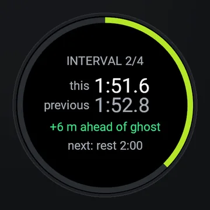
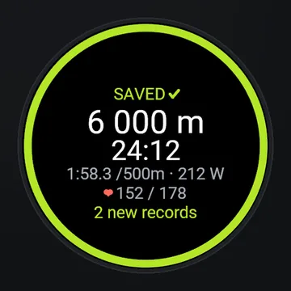

Aplikacja na Androida do ergometrów wioślarskich
Twój ergometr, z trenerem na ekranie.
Połącz się przez Bluetooth, wybierz trening i wiosłuj za pacerem, którego widzisz z drugiego końca pokoju. Strefy tempa z twojego 2k, komunikaty głosowe i twój najlepszy trening płynący obok jako duch.
ErgBeat jest w zamkniętych testach w Google Play. Dołącz, powiosłuj kilka razy i powiedz nam, co myślisz. Android 8.0 lub nowszy, za darmo, Pro opcjonalnie.

Pacer, którego czytasz z siedzenia.
Kulka udaje rączkę. Szybko przechodzi przez przeciągnięcie i powoli wraca w powrocie, dokładnie w twoim docelowym tempie, a łuk wypełnia się z każdym ruchem.
Jak to działa
Trzy kroki do pierwszego treningu.
Połącz ergometr
Dowolny ergometr z Bluetooth FTMS lub Concept2 PM5. Dodaj pas piersiowy albo zegarek, który nadaje tętno.
Wybierz trening
Propozycja na dziś, jeden z 21 treningów, dzień z programu albo twój własny.
Wiosłuj
Pacer w kształcie łuku przechodzi przez przeciągnięcie i powrót w twoim docelowym tempie. Ekran mówi, czy wiosłujesz za mocno, w strefie czy za lekko.
Ekran treningu
Zrobiony do czytania z siedzenia.
Strefy tempa z twojego 2k: od UT2 do AN, z informacją przy każdym ruchu.
Ścigaj się z duchem swojego najlepszego lub ostatniego treningu, z różnicą w metrach.
Głos, sygnały i metronom, żeby nie patrzeć na ekran podczas długich odcinków.
Start z pierwszym ruchem, automatyczna pauza, gdy przestajesz, szybkie ustawienia bez wychodzenia.
Pionowo lub poziomo, działa dalej z wyłączonym ekranem lub w trybie obraz w obrazie.

Treningi i programy
Wiosłuj według planu.
21 treningów: wiosłowanie ciągłe, interwały, sprinty, piramida, drabinka tempa, WOD-y w stylu CrossFit z burpees lub wall ballami oraz testy na 500 m, 1k, 2k, 5k i 30 minut.



- FundamentyPoczątek wiosłowania
- BudowaWiększa objętość
- SzczytCel: 2k
- Silnik CrossFitKondycja do boxa
Postępy
Zobacz, jak to się sumuje.
Tygodniowy cel w metrach i seria kolejnych tygodni.
Szacowany wynik na 2k, trend splitu i ten sam trening w czasie.
Każdy trening ze splitami, tętnem i mocą, dla każdego interwału.
Rekordy osobiste, wykrywane automatycznie w każdym treningu:

Garmin
Także na nadgarstku.
ErgBeat dla Garmin to darmowa aplikacja Connect IQ. Zegarek pokazuje trening i zapisuje go w Garmin Connect z danymi z ergometru, tętnem z nadgarstka i okrążeniem dla każdego interwału.
Działa z fēnix 8 (43 mm, 47 mm, Pro 47 mm, Solar 47 mm i 51 mm), Forerunner 965 i Forerunner 265.


Współpracuje z
Twój ergometr, twój pas, twoje aplikacje.
Ergometry z FTMS
Na przykład Rogue Echo Rower. Obsługuje go większość nowszych ergometrów Bluetooth.
Concept2 PM5
Z długością przeciągnięcia, siłą szczytową i krzywą siły każdego ruchu.
Pas lub zegarek
Pas piersiowy albo zegarek, który nadaje tętno.
Twoje inne aplikacje
Health Connect. FIT i CSV dla Garmin Connect, Strava i intervals.icu (Pro).
Prywatność od podstaw
Twoje treningi zostają na twoim telefonie.
ErgBeat nigdzie nie wysyła twoich danych. To ty decydujesz, co wyeksportować, udostępnić lub zapisać jako kopię.
- Bez konta
- Bez reklam
- Bez analityki
- Bez śledzenia
Za darmo i Pro
Wiosłuj za darmo. Weź Pro dla planu.
| Funkcja | Za darmo | Pro |
|---|---|---|
| Połączenie z ergometrem i pulsometrem, ekran treningu, pacer, komunikaty głosowe | ✓ | ✓ |
| Treningi | 4 i wolne wiosłowanie20 min ciągle, 10 × 1 min, 4 × 500 m, test 2k | Wszystkie 21 |
| Programy | – | 4 |
| Edytor treningów i generator interwałów | – | ✓ |
| Historia, cel tygodniowy, przypomnienia, Health Connect, zegarek Garmin | ✓ | ✓ |
| Duch, rekordy osobiste, wykresy postępów, szacowany wynik na 2k | – | ✓ |
| Trening mocy (FTP, strefy mocy) | – | ✓ |
| Eksport FIT i CSV | – | ✓ |
| Wybór kart na ekranie treningu | – | ✓ |
Miesięcznie, rocznie lub raz na zawsze
Pro kupujesz w Google Play, który pokazuje dokładną cenę w twojej walucie, z podatkami.
Częste pytania
Pytania.
Czy działa z moim ergometrem?
Jeśli twój ergometr lub jego monitor obsługuje Bluetooth FTMS (robi to większość nowszych ergometrów Bluetooth), tak. Concept2 PM5 jest obsługiwany bezpośrednio. Nie masz pewności? Zainstaluj aplikację i dotknij przycisku Ergometr: ErgBeat pokaże, co znajdzie, a ergometr demo pozwala wypróbować wszystko bez sprzętu.
Czy potrzebuję konta?
Nie. Nie ma konta ani logowania.
Gdzie są moje dane?
Na twoim telefonie. Możesz zapisać kopię do wybranego pliku (np. na Dysku Google) i eksportować treningi jako FIT lub CSV.
Czy działa ze Stravą lub Garmin Connect?
Tak. Aplikacja na zegarek Garmin zapisuje bezpośrednio w Garmin Connect, a Pro eksportuje pliki FIT do Stravy, Garmin Connect i intervals.icu.
Czy działa z wyłączonym ekranem?
Tak. Trening trwa dalej z wyłączonym ekranem, z powiadomieniem na ekranie blokady.
Jakie języki?
Angielski, chorwacki, niemiecki, hiszpański, francuski, włoski, portugalski, polski i niderlandzki.
Znalazłem błąd albo mam pomysł.
Użyj Wyślij opinię w aplikacji lub napisz na jaan.dsgn@gmail.com.